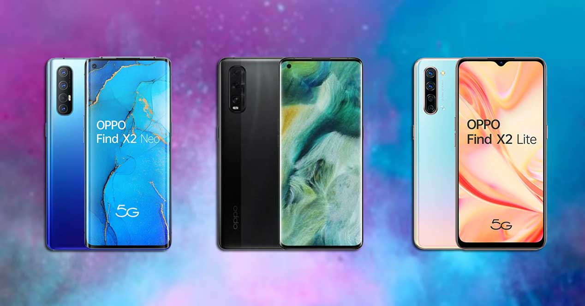
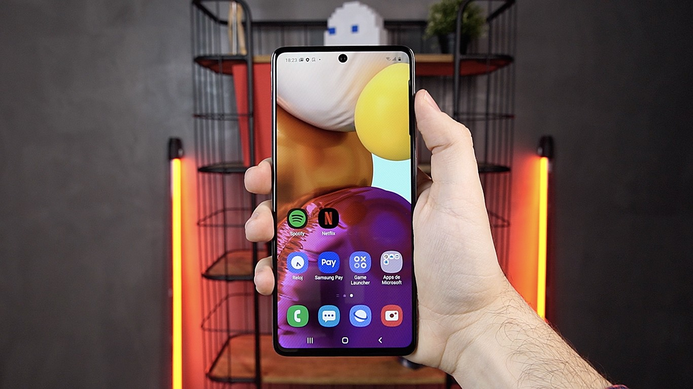
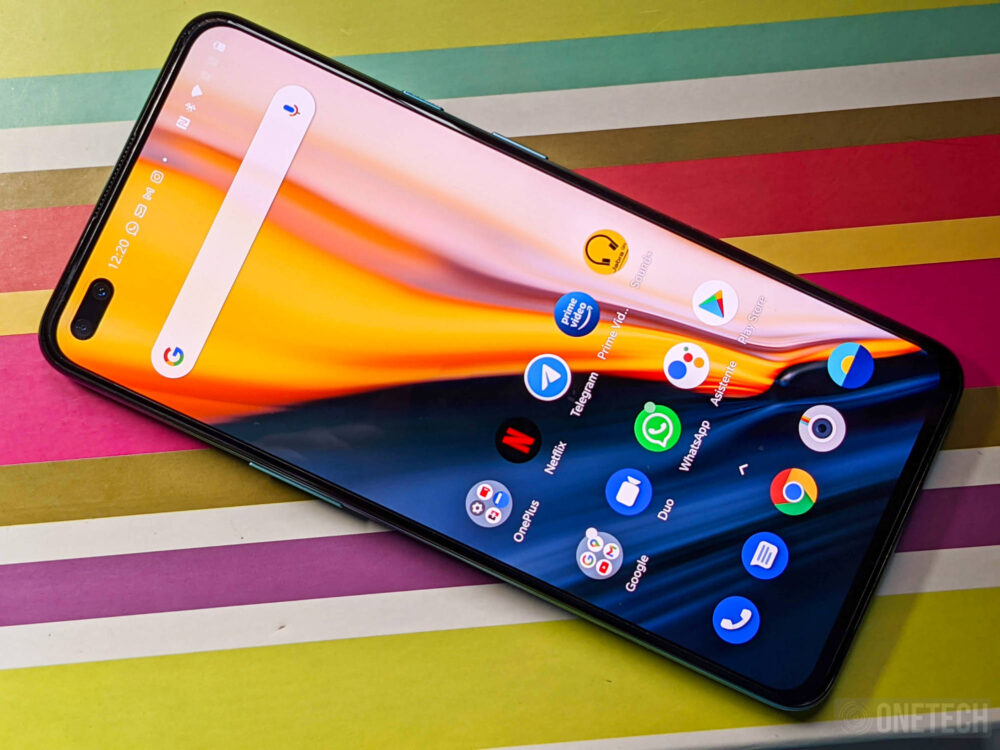
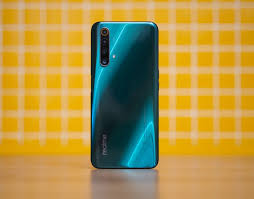

MEJORES MÓVILES CALIDAD/PRECIO
La gente tiende a comprarse los teléfonos que ven anunciados en las portadas y anuncios de televisión o redes sociales los cuales suelen pertenecer a marcas con gran prestigio que te ofrecen un dispositivo atractivo visualmente y con unas prestaciones muy buenas además de tener un alto precio. Actualmente existen una gran variedad de dispositivos móviles que pueden ofrecerte mejores prestaciones que otros de marcas prestigiosas a un precio menor o que por lo menos te ofrecen una gran experiencia en relación calidad/precio. A continuación hablaremos de algunos modelos que destacan por su gran funcionalidad por un precio no muy alto.
XIAOMI
La marca Xiaomi posee muy buenos modelos a un precio bastante ajustado de los cuales hablaremos de dos, del Xiaomi Mi 10 y del Xiaomi Mi 10T Lite. El Mi 10 tiene un precio superior y nos ofrece la oportunidad de usar la nueva tecnología 5G además de un procesador que no usaba la marca, snapdragon, el cual es muy superior al resto de dispositivos de la marca aparte de mejorar aspectos básicos como la cámara, la calidad de la pantalla y los hercios que esta nos ofrece, teniendo este teléfono un precio de 600 euros. Pero nos centraremos en el otro modelo el cual también te da la opción de usar el 5G en un teléfono de gama media el cual es muy comparado con el POCO X3 siendo el Xiaomi un poco más rápido y estando en el mercado por el precio de 300 euros.

| PROS | CONTRAS |
|---|---|
| Huella lateral que facilita su uso | Gran facilidad para ensuciarse |
| Tasa de refresco de la pantalla de 120 hercios | Peso elevado comparado con otros móviles |
| Tasa de refresco adaptativa para un menor consumo de batería | La pantalla tiene un sombreado exagerado |
| Tiene una gran batería | Panel de control muy mejorable |
OPPO
De esta marca hablaremos del nuevo Oppo Find X2 Lite la cual es la versión disminuida de la gama Find X2, aun así este modelo cuenta con unas características excepcionales como una gran cámara que ofrece grandes experiencias de foto y vídeo con su cuádruple cámara la cual posee gran angular, monocromo y bokeh. Como ya hemos dicho, este móvil es una versión reducida, pero aun así posee la capacidad de conectarse con 5G por un coste bastante bajo que ronda los 290 euros. Este móvil se une a la característica original de Samsung de lector de huella dactilar bajo la pantalla para poder darle una imagen más estética del teléfono y mejorando la tecnología para una reacción más rápida del desbloqueo de pantalla.
| PROS | CONTRAS |
|---|---|
| Muy ligero y cómodo en la mano | No se puede insertar microSD |
| Muy rápido y gran rendimiento | Tiene poco sonido de altavoz |
| El desbloqueo facial es muy rápido | Tiene poca memoria de almacenamiento |
| Tiene una muy buena autonomía | No llega a los 90 hercios de tasa de refresco |
SAMSUNG
Samsung es una marca que se podría considerar de alta gama pero tiene modelos más económicos como son los Galaxy A que por un precio menor te ofrecen un móvil con unas características sobresalientes como las del dispositivo en el que nos vamos a centrar, el Samsung Galaxy A71. Este modelo cuenta con 6,7 pulgadas sin apenas marcos en la pantalla dando una sensación mayor de tamaño del teléfono. Este móvil también cuenta con una gran protección a las roturas ya que al ser un móvil tan ligero y con tanta pantalla tienden a romperse con gran facilidad. Cuenta también con un procesador snapdragon 730 el cual es bastante bueno para regalarte una gran experiencia de uso además de correr los juegos con bastante fluided y rapidez. En cuanto a fotografía y vídeo, este móvil cuenta con una cuádruple cámara la cual funciona de manera más que correcta añadiendo funciones de fotografía que podemos ver solo en modelos superiores a este.
| PROS | CONTRAS |
|---|---|
| Muy buena cantidad de memoria interna | Tiene un lector de huellas muy lento |
| Es extremadamente ligero | Esta fabricado con palstico y no con cristal |
| Pantalla con muy buena calidad de imagen | Fluided mejorable debido a que solo tiene 60Hz |
| Tiene una gran autonomía | El altavoz tiene poca potencia |
ONEPLUS
De OnePlus hablaremos que ha vuelto al mercado de gama media donde los teléfonos son más asequibles y normalmente generan más ventas, entra en este mercado apostando por un móvil de la mejor calidad donde se utilizan componentes y materiales de la gama alta bajando considerablemente el precio de los dispositivos y añadiendo también la nueva conectividad 5G. Es un teléfono compacto de gran potencia de un tamaño bastante manejable aparte de mantener todos los puertos de un móvil más grande. Este modelo también se suma a la tendencia de usar cámaras cuádruples para así poder generar más efectos de profundidad y conseguir una mayor calidad, tiene una cámara bastante buena además de bien exprimida por parte de los creadores para que así el dispositivo nos ofrezca una maravillosa experiencia por un precio de unos 400 euros.
| PROS | CONTRAS |
|---|---|
| Muy buena pantalla y con mucha nitidez | No soporta las redes wifi 6 |
| Extensa duración de la batería | No tiene led de notificación |
| Un móvil muy apto para jugar | Es fragil ya que es de plástico |
| La CPU corre todas las aplicaciones con facilidad | Hay que abrir la pantalla para usar la huella |
REALME
Realme desde un principio ha sido una marca que se ha dedicado a los teléfonos de gama media y en muchos casos manteniendo la estética de sus móviles siendo el modelo del que vamos a hablar uno de los que más se han salido de esta estética apostando por mejorar la calidad del móvil sin aumentar su precio base, se trata del nuevo Realme X50 5G. Este teléfono es robusto y está hecho con materiales difíciles de romper para poder así ofrecer una mayor seguridad al dispositivo además de ser casi todo pantalla teniendo la doble cámara frontal integrada en la pantalla. Para desbloquear este teléfono tenemos reconocimiento facial y lector de huellas integrado en el botón de encendido, estos funcionan con bastante rapidez facilitando su uso.
| PROS | CONTRAS |
|---|---|
| A pesar de su bajo precio cuenta con tecnología 5G | Se ensucia con bastante facilidad |
| Posee una cámara de gran potencia y calidad | Es algo pesado a la hora de usarlo de seguido |
| Tiene un procesador que permite al móvil tener un gran rendimiento | No tiene puerto para conectar los auriculares |
| Tiene una memoria RAM muy grande | Las fotos con mucho brillo no las capta bien |
| Xiaomi 10T Lite | Oppo Find X2 Lite | Samsung Galaxy A71 | OnePlus Nord | Realme X50 5G | |
|---|---|---|---|---|---|
| Pantalla | 6,67 pulgadas | 6,4 pulgadas | 6,7 pulgadas | 6,44 pulgadas | 6,57 pulgadas |
| RAM | 6 GB | 8 GB | 6/8 GB | 8/12 GB | 12 GB |
| Batería | 4.820 mAh | 4.025 mAh | 4.500 mAh | 4.115 mAh | 4.200 mAh |
| Cámara | 64 MP 1/1,7” (1,6 µm) Super Pixel 4 en 1, f/1.89, 79,8º, AF Gran angular 8 MP (1,12 µm), 120º, f/2.2 Macro 2 MP 4 cm (1,75 µm), f/2.4, FF Profundidad 2 MP (1,75 µm), f/2.4 | 48 MP f/1.7 8 MP f/2.2 gran angular 2 MP f/2.4 monocromo 2 MP f/2.4 bokeh | 64 MP f/1.8 5 MP f/2.4 macro 12 MP f/2.2 gran angular 5 MP f/2.2 profundidad | 48 MP Sony IMX586, f/1.75 OIS 8 MP ultra gran angular f/2.25 2 MP macro f/2.4 5 MP profundidad f/2.4 | 48 MP (1/2”) f/1.8 25,4 mm Macro 2 MP f/2.4 4 cm Ultra gran angular 8 MP f/2.3, 119º 15,7 mm 2 MP monocromo f/2.4 |
| Precio | Desde 280 euros | Desde 290 euros | Desde 470 euros | Desde 400 euros | Desde 350 euros |